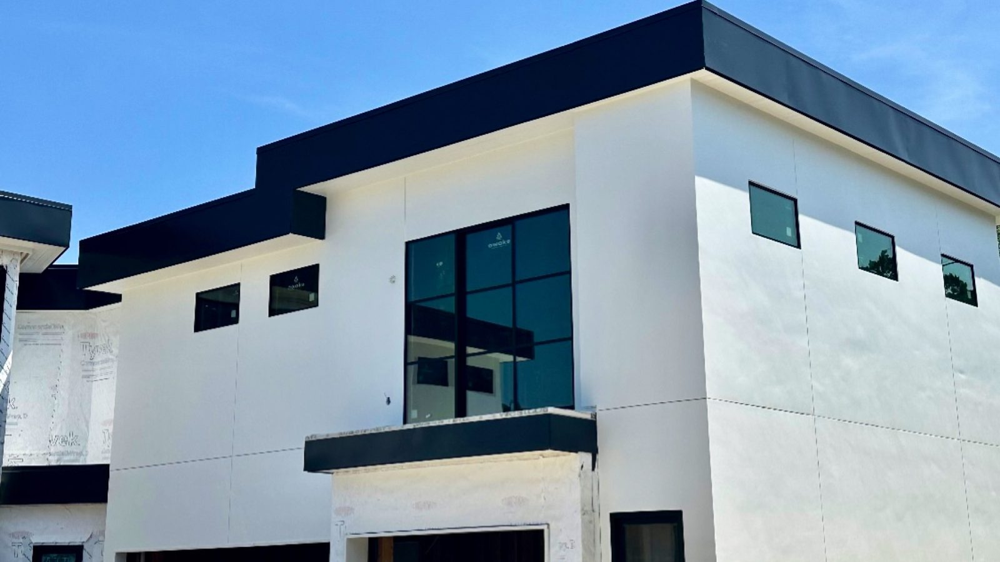

Skip to content
Capitol Curated Construction
Home
Services
Our work
Reviews
About
Menu
Home
Services
Our work
Reviews
About
Get a quote
Capitol Curated · Kyle
Our work
Decks, framing, exteriors and interiors from jobs around Kyle.
All
Decks
Framing
Interiors
Exteriors
Doors
Stained deck with cable railing
Framing on a large build
Deck boards getting stain
Steel frame over a concrete pad
Porch addition framing
Kitchen with red cabinets
Blue exterior, white railing

Modern white and black exterior
Entry door being finished